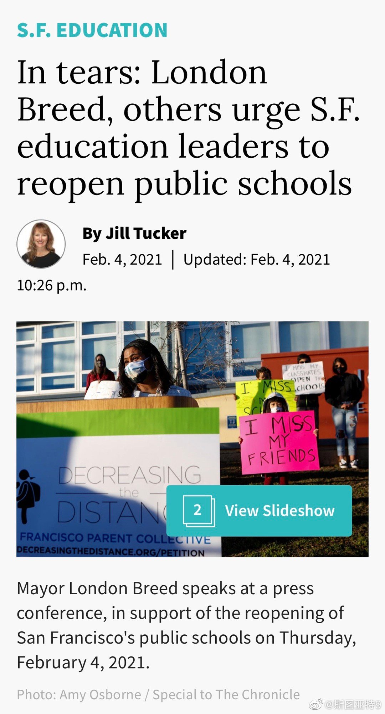

美国最高法院以6:3否决了加州的教堂礼拜禁令。理由是加州允许超市开放却不允许教堂开放，造成对宗教的歧视。未来几十年最高法院的判决估计没法看了……

斯图亚特9
2021-02-05
斯图亚特9
2021-02-05
旧金山市长含泪讲话，希望本市教育委员会开放公立学校。这新闻怎么看着这么魔幻……
- 
斯图亚特9
2021-02-05
@-Yourone-:
【为什么只有慢速阅读才能深度学习？】一位受过教育的成年人，其阅读速度一般是每分钟250到400个单词。速读者们渴望将自己的基础阅读速度提高至两倍、三倍，甚至更高。多个研究表明，努力地速读在提高阅读速度的同时，也会导致速读者对内容的理解减少。随着阅读速度提高，你对内容的理解会减少。最终，你会发现，自己只是在浏览文字而已。